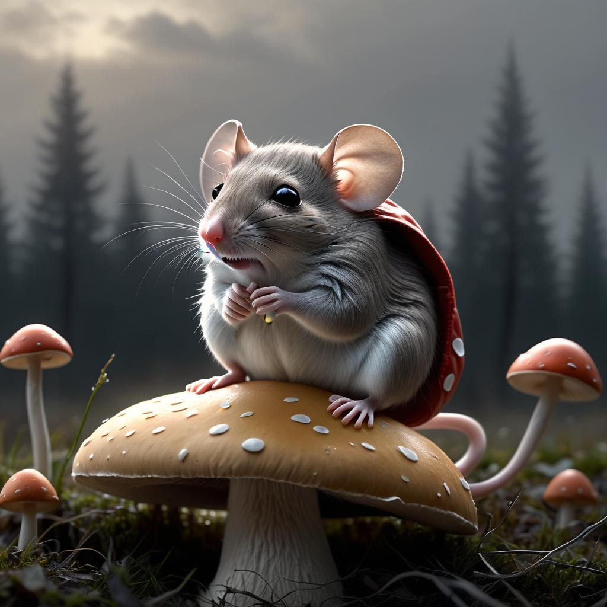

The salamander ran by and reminded Charles where he dropped his cape; the cape was perfect for the cool morning air while the fog was still clearing. The valise and satchel were nearby and he gathered them up and began walking home. His gait had a bit of a spring in it because he was thinking about how he wanted to see his family.